Основи програмування
Звіт до лабораторної роботи №4
Рекурентні співвідношення. Степеневі ряди. Ланцюгові дроби • Варіант 6
Оберіть розділ звіту
Лабораторна робота №4 / 01 з 08
1. Мета роботи
- Вивчити особливості циклічних обчислювальних процесів з розгалуженнями.
- Опанувати технологію рекурентних обчислень.
- Навчитися розробляти алгоритми та програми розвинення функцій у ряди.
Лабораторна робота №4 / 02 з 08
2. Умови задач
Завдання 1 - варіант 6
Варіант 6 (у таблиці 24 варіанти, 30 - 24 = 6).
Обчислити значення функції y, розвинувши функцію cos(x) у ряд Тейлора. Визначити похибку.
y = cos(x/2) / cos(x + 0.5), 1 ≤ x ≤ 2
Вимоги до програми:
- параметр функції змінюється від заданого з клавіатури мінімального значення до заданого максимального значення із певним кроком;
- розвинення в ряд виконується із заданою з клавіатури точністю, яка вводиться дробовим числом у діапазоні від 10-2 до 10-6;
- для розвинення функції в ряд створити власну функцію, яка рахує суму ряду за рекурентним співвідношенням, функції для обчислення факторіала і степеня не використовувати;
- стандартне значення функції обчислювати за допомогою бібліотечних математичних функцій;
- результати вивести таблицею з колонками "значення аргумента x", "значення функції y", "стандартне значення функції", "похибка";
- якщо для вибраного значення аргумента функція не визначена, друкувати повідомлення "function is not defined".
Варіант без зірочки, тому потрібна одна функція користувача для ряду.
Завдання 2 - варіант 6
Варіант 6 (у таблиці 24 варіанти, 30 - 24 = 6).
Обчислити нескінченний ланцюговий дріб, задавши точність обчислення (10-5) з клавіатури. Ланцюговий дріб виражає число √3:
Лабораторна робота №4 / 03 з 08
3. Аналіз задач
Завдання 1 - ряд для косинуса
Ряд для косинуса взято з таблиці 4.1 (рядок 6):
Рекурентної формули там немає, тому її виведено так само, як у прикладі для sin x з методички: наступний член ділиться на попередній. Для члена з номером n маємо an = (-1)n · t2n / (2n)!, де t є аргументом косинуса. Після скорочення лишається:
Сума накопичується, поки модуль поточного члена більший за точність ε. Функція calculateCos викликається для різних аргументів
(x, x2, x / 2, x + 0.5), тому аргумент передається параметром.
Завдання 1 - вибір формули
Точка x = 1 належить обом проміжкам, а значення формул різні: 0.1577 і 12.4. У програмі першою перевіряється перша формула, тому при x = 1 діє вона. Якщо x поза проміжком від -1 до 2, функція не задана, і в рядку таблиці друкується "function is not defined".
Таке саме повідомлення виводиться біля нуля знаменника. На проміжку від 1 до 2 вираз cos(x + 0.5) дорівнює нулю при x = π/2 - 0.5 ≈ 1.0708. Модуль знаменника менший за 0.0001 вважається нулем. Перевіряються обидва знаменники, через ряд і через бібліотечну функцію.
Похибка в таблиці є модулем різниці |y - стандартне значення|, як у прикладі методички.
Завдання 1 - кроки по x і введення
Спочатку рахується кількість кроків, а x знаходиться через номер кроку:
x = xmin + i · крок. Так похибка float не накопичується і останнє значення
не втрачається. До частки (xmax - xmin) / крок додається поправка 0.001.
Межі проміжків теж перевіряються з поправкою, 0.00001: при xmin = -1.1 і кроці 0.1
значення, що мало б дорівнювати 1, у float виходить 1.0000001.
Однакове введення повторюється чотири рази, тому воно винесене у функцію inputNumber
з межами в параметрах. Якщо введено не число або число поза межами, програма повідомляє про помилку
і просить увести ще раз. Межі такі: xmin від -10 до 10, xmax від
xmin до 10, крок від 0.01 до 10, точність від 10-6 до 10-2.
Завдання 1 - структура програми
Таблиця 1 - Функції програми завдання 1
| Функція | Призначення |
|---|---|
main | виклик основних кроків програми |
welcome | виведення даних про автора та умови задачі |
inputNumber | введення дійсного числа з перевіркою меж |
inputData | введення меж x, кроку і точності |
calculateCos | сума ряду для косинуса за рекурентною формулою |
calculateFunction | вибір формули, обчислення y і стандартного значення для поточного x |
printTable | цикл по x і виведення таблиці |
Завдання 2 - метод
Дріб із n рівнями рахується знизу вгору: береться найнижчий знаменник, а далі кожен рівень дорівнює своєму цілому числу плюс 1, поділене на значення рівня під ним:
Числа ai чергуються: для непарного i це 1, для парного 2. Найнижчий знаменник an вибирається так само.
Дріб нескінченний, тому кількість рівнів збільшується, поки два сусідні значення не стануть ближчими за ε: |cn - cn-1| ≤ ε. Значення по черзі стають то більшими, то меншими за √3 (2, 1.667, 1.75, 1.727, ...), тому справжня похибка менша за останню різницю.
Точність вводиться від 10-5 до 0.1. Якщо введено не число або число поза межами, введення повторюється.
Таблиця 2 - Функції програми завдання 2
| Функція | Призначення |
|---|---|
main | виклик основних кроків програми |
welcome | виведення даних про автора та умови задачі |
inputAccuracy | введення точності з перевіркою |
calculateFraction | обчислення дробу із заданою кількістю рівнів |
calculateRoot | збільшення кількості рівнів до заданої точності, таблиця |
printResult | виведення результату і порівняння з sqrt(3) |
Джерела: Ковалюк Т.В. Алгоритмізація та програмування, 2024; Ковалюк Т.В., Петрівський В.Я. Гарний стиль програмування мовами C, C++, C#, 2025.
Лабораторна робота №4 / 04 з 08
4. Блок-схеми алгоритмів
Завдання 1 - варіант 6

welcome (виведення даних про автора та умови задачі)
inputNumber (введення дійсного числа з перевіркою меж)
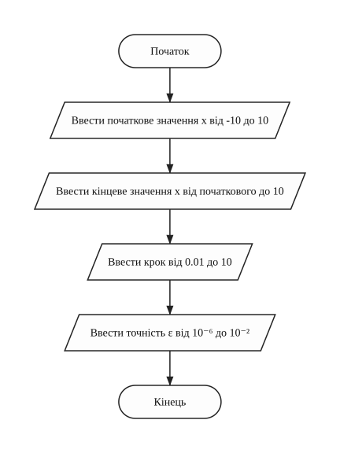
inputData (введення меж зміни x, кроку і точності)
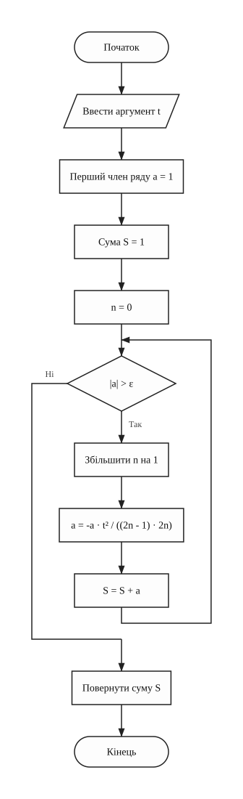
calculateCos (обчислення косинуса аргументу t через ряд Тейлора)
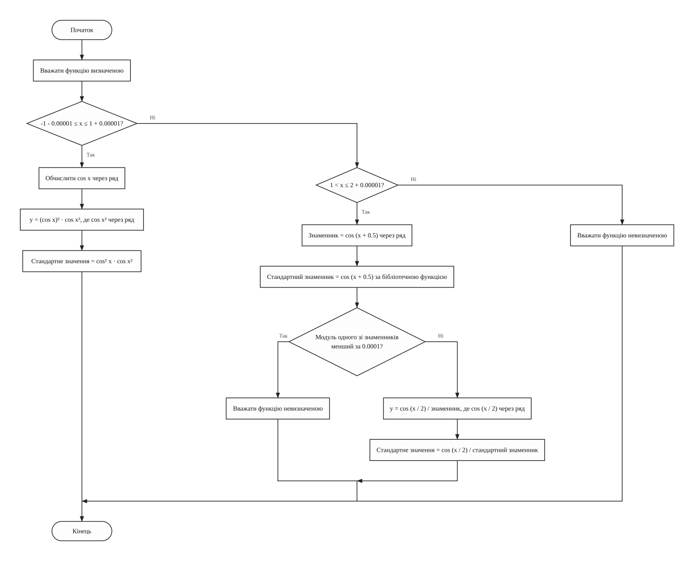
calculateFunction (обчислення значення функції і стандартного значення)
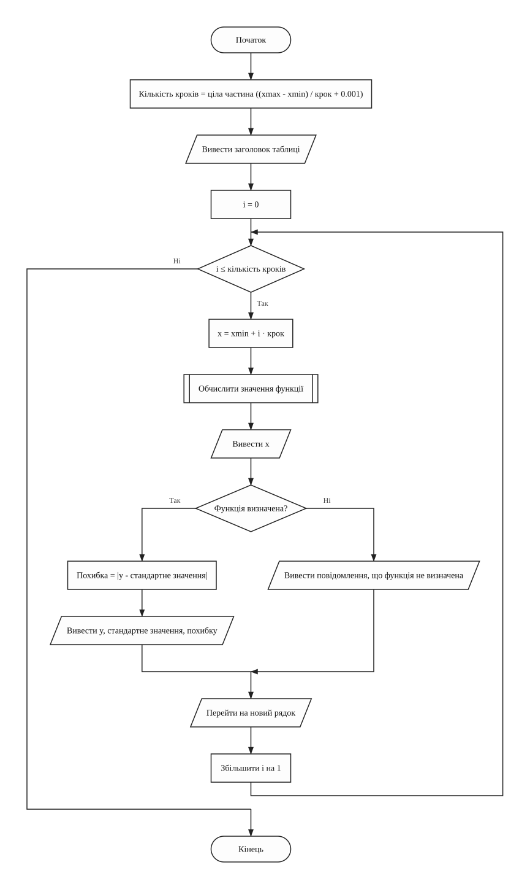
printTable (обчислення значень x і виведення таблиці)
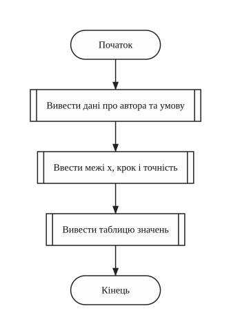
main (головна функція)Завдання 2 - варіант 6

welcome (виведення даних про автора та умови задачі)
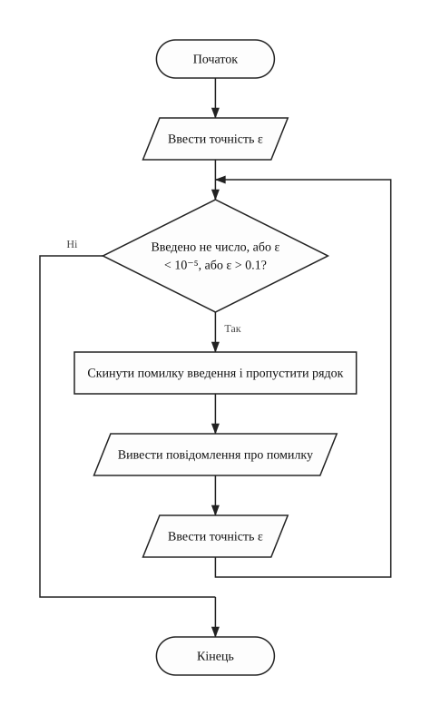
inputAccuracy (введення точності з перевіркою)
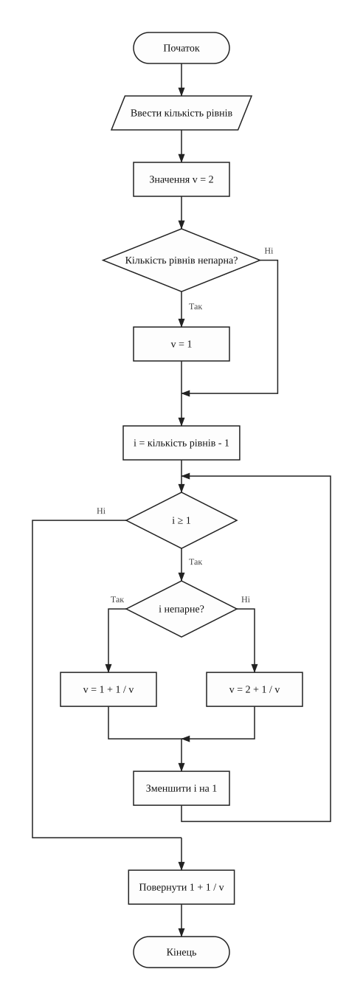
calculateFraction (обчислення дробу із заданою кількістю рівнів)
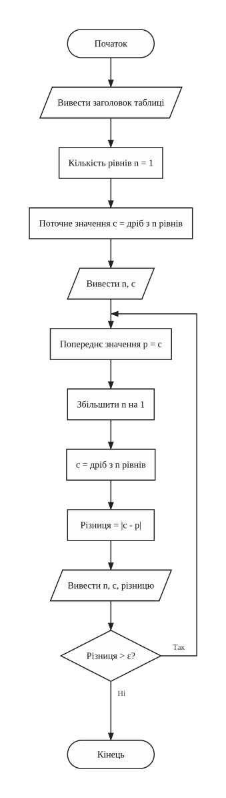
calculateRoot (обчислення дробу із заданою точністю і виведення таблиці)
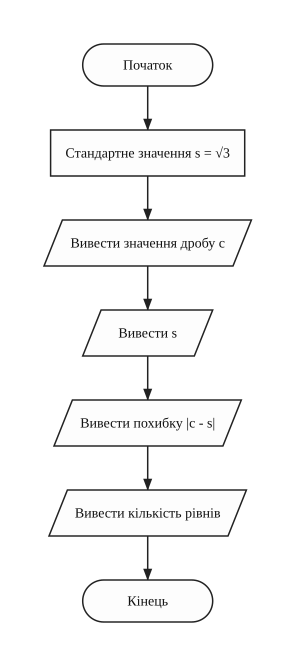
printResult (порівняння результату зі значенням кореня)
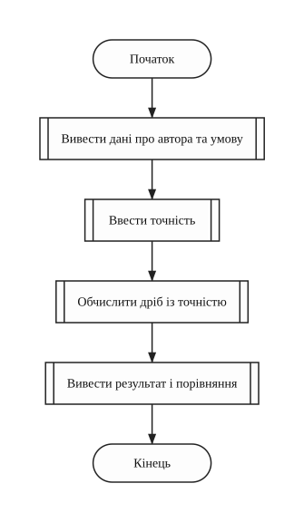
main (головна функція)Лабораторна робота №4 / 05 з 08
5. Тексти програм
Завдання 1 - варіант 6
Файл task1.cpp
/////////////////////////////////////////////////////////////////////
// Ім'я файлу: task1.cpp
// Автор: Шимко Матвій, гр. ІПЗ-11(3)
// Номер версії модуля: version 1
// Запланована ціль: лабораторна робота №4, завдання 1, варіант 6.
// Обчислити кусково задану функцію, розвинувши
// cos(x) у ряд Тейлора, і вивести таблицю.
/////////////////////////////////////////////////////////////////////
#include <cmath>
#include <iomanip>
#include <iostream>
using namespace std;
//=========== константи
const float MIN_X = -10; // найменше значення аргументу
const float MAX_X = 10; // найбільше значення аргументу
const float MIN_STEP = 0.01f; // найменший крок
const float MAX_STEP = 10; // найбільший крок
const float MIN_ACCURACY = 0.000001f; // найменша точність
const float MAX_ACCURACY = 0.01f; // найбільша точність
const float MIN_DENOMINATOR = 0.0001f; // менший модуль вважається нулем
const float STEP_ROUNDING = 0.001f; // поправка до кількості кроків
const float BORDER_ROUNDING = 0.00001f; // поправка до меж проміжків
//=========== глобальні змінні
float minX = 0; // початкове значення x
float maxX = 0; // кінцеве значення x
float step = 0; // крок зміни x
float accuracy = 0; // точність ряду
float x = 0; // поточне значення аргументу
float y = 0; // значення функції через ряд
float standardValue = 0; // значення через бібліотечні функції
float deviation = 0; // похибка
int stepCount = 0; // кількість кроків
bool isDefined = true; // чи визначена функція в точці x
/*
* Функція виводить дані про автора та умову задачі
* Параметри: немає
* Значення, що повертаються: немає
*/
void welcome()
{
cout << "Lab work 4. Task 1. Variant 6." << endl;
cout << "Author: Matvii Shimko, group IPZ-11(3)" << endl << endl;
cout << "Calculate the function, using the Taylor series of cos(x)" << endl;
cout << " | cos(x)^2 * cos(x^2), -1 <= x <= 1" << endl;
cout << "y = |" << endl;
cout << " | cos(x/2) / cos(x + 0.5), 1 <= x <= 2" << endl << endl;
}
/*
* Функція вводить дійсне число. Якщо введено не число або число
* поза межами, введення повторюється
* Параметри: minValue - найменше допустиме значення,
* maxValue - найбільше допустиме значення
* Значення, що повертаються: введене число
*/
float inputNumber(float minValue, float maxValue)
{
float number = 0;
cin >> number;
while (cin.fail() || number < minValue || number > maxValue)
{
cin.clear(); // скинути помилку введення
cin.ignore(1000, '\n'); // і пропустити неправильний рядок
cout << "Error! Enter a number from the given range: ";
cin >> number;
}
return number;
}
/*
* Функція вводить межі зміни x, крок і точність
* Параметри: немає
* Значення, що повертаються: немає
*/
void inputData()
{
cout << "Enter minimal x (from -10 to 10): ";
minX = inputNumber(MIN_X, MAX_X);
cout << "Enter maximal x (not less than minimal, up to 10): ";
maxX = inputNumber(minX, MAX_X);
cout << "Enter step (from 0.01 to 10): ";
step = inputNumber(MIN_STEP, MAX_STEP);
cout << "Enter accuracy (from 0.000001 to 0.01): ";
accuracy = inputNumber(MIN_ACCURACY, MAX_ACCURACY);
}
/*
* Функція рахує cos через ряд Тейлора. Кожен член рахується через
* попередній, поки модуль члена більший за точність
* Параметри: argument - аргумент косинуса
* Значення, що повертаються: сума ряду
*/
float calculateCos(float argument)
{
float member = 1; // перший член ряду, коли n = 0
float sum = 1; // сума ряду
int n = 0; // номер члена ряду
while (fabs(member) > accuracy)
{
n++;
member = -member * argument * argument / ((2 * n - 1) * (2 * n));
sum = sum + member;
}
return sum;
}
/*
* Функція рахує y і стандартне значення для поточного x. Якщо x поза
* проміжками або один зі знаменників майже нуль, функція не визначена.
* При x = 1 формули перекриваються, діє перша
* Параметри: немає
* Значення, що повертаються: немає
*/
void calculateFunction()
{
float cosX = 0; // cos(x) через ряд
float denominator = 0; // cos(x + 0.5) через ряд
float standardDenominator = 0; // cos(x + 0.5) через бібліотечну функцію
isDefined = true;
if (x >= -1 - BORDER_ROUNDING && x <= 1 + BORDER_ROUNDING)
{
cosX = calculateCos(x);
y = cosX * cosX * calculateCos(x * x);
standardValue = cos(x) * cos(x) * cos(x * x);
}
else if (x > 1 && x <= 2 + BORDER_ROUNDING)
{
denominator = calculateCos(x + 0.5f);
standardDenominator = cos(x + 0.5f);
if (fabs(denominator) < MIN_DENOMINATOR
|| fabs(standardDenominator) < MIN_DENOMINATOR)
{
isDefined = false;
}
else
{
y = calculateCos(x / 2) / denominator;
standardValue = cos(x / 2) / standardDenominator;
}
}
else
{
isDefined = false;
}
}
/*
* Функція виводить таблицю. Значення x рахується через номер кроку,
* щоб похибка float не накопичувалась і останній x не втрачався
* Параметри: немає
* Значення, що повертаються: немає
*/
void printTable()
{
stepCount = (int)((maxX - minX) / step + STEP_ROUNDING);
cout << endl
<< setw(10) << "x" << setw(16) << "y" << setw(18) << "standard value"
<< setw(14) << "error" << endl;
for (int i = 0; i <= stepCount; i++)
{
x = minX + i * step;
calculateFunction();
cout << fixed << setprecision(4) << setw(10) << x;
if (isDefined)
{
deviation = fabs(y - standardValue);
cout << setprecision(6) << setw(16) << y << setw(18)
<< standardValue << scientific << setprecision(2) << setw(14)
<< deviation;
}
else
{
cout << " function is not defined";
}
cout << endl;
}
}
int main()
{
welcome();
inputData();
printTable();
return 0;
}
Завдання 2 - варіант 6
Файл task2.cpp
/////////////////////////////////////////////////////////////////////
// Ім'я файлу: task2.cpp
// Автор: Шимко Матвій, гр. ІПЗ-11(3)
// Номер версії модуля: version 1
// Запланована ціль: лабораторна робота №4, завдання 2, варіант 6.
// Обчислити нескінченний ланцюговий дріб для
// кореня з 3 із заданою точністю.
/////////////////////////////////////////////////////////////////////
#include <cmath>
#include <iomanip>
#include <iostream>
using namespace std;
//=========== константи
const float MIN_ACCURACY = 0.00001f; // найменша точність
const float MAX_ACCURACY = 0.1f; // найбільша точність
//=========== глобальні змінні
float accuracy = 0; // точність
float current = 0; // значення дробу для поточної кількості рівнів
float previous = 0; // значення дробу на попередньому кроці
float difference = 0; // модуль різниці двох сусідніх значень
int levelCount = 0; // кількість рівнів дробу
float standardValue = 0; // значення кореня через sqrt
/*
* Функція виводить дані про автора та умову задачі
* Параметри: немає
* Значення, що повертаються: немає
*/
void welcome()
{
cout << "Lab work 4. Task 2. Variant 6." << endl;
cout << "Author: Matvii Shimko, group IPZ-11(3)" << endl << endl;
cout << "Calculate the infinite continued fraction for the root of 3"
<< endl;
cout << "sqrt(3) = 1 + 1/(1 + 1/(2 + 1/(1 + 1/(2 + ...))))" << endl << endl;
}
/*
* Функція вводить точність. Якщо введено не число або число
* поза межами, введення повторюється
* Параметри: немає
* Значення, що повертаються: немає
*/
void inputAccuracy()
{
cout << "Enter accuracy (from 0.00001 to 0.1): ";
cin >> accuracy;
while (cin.fail() || accuracy < MIN_ACCURACY || accuracy > MAX_ACCURACY)
{
cin.clear(); // скинути помилку введення
cin.ignore(1000, '\n'); // і пропустити неправильний рядок
cout << "Error! Enter accuracy from 0.00001 to 0.1: ";
cin >> accuracy;
}
}
/*
* Функція рахує дріб із заданою кількістю рівнів, починаючи знизу.
* Знаменники під першою одиницею чергуються: 1, 2, 1, 2, ...
* Параметри: levels - кількість рівнів дробу (не менше 1)
* Значення, що повертаються: значення дробу
*/
float calculateFraction(int levels)
{
float value = 2; // значення знаменника на найнижчому рівні
if (levels % 2 == 1)
{
value = 1;
}
for (int i = levels - 1; i >= 1; i--)
{
if (i % 2 == 1)
{
value = 1 + 1 / value;
}
else
{
value = 2 + 1 / value;
}
}
return 1 + 1 / value;
}
/*
* Функція збільшує кількість рівнів дробу, поки два сусідні значення
* не стануть ближчими за точність, і виводить таблицю
* Параметри: немає
* Значення, що повертаються: немає
*/
void calculateRoot()
{
cout << endl << fixed << setprecision(6);
cout << setw(8) << "levels" << setw(14) << "value" << setw(14)
<< "difference" << endl;
levelCount = 1;
current = calculateFraction(levelCount);
cout << setw(8) << levelCount << setw(14) << current << endl;
do
{
previous = current;
levelCount++;
current = calculateFraction(levelCount);
difference = fabs(current - previous);
cout << setw(8) << levelCount << setw(14) << current << setw(14)
<< difference << endl;
} while (difference > accuracy);
}
/*
* Функція порівнює результат із значенням sqrt(3)
* Параметри: немає
* Значення, що повертаються: немає
*/
void printResult()
{
standardValue = sqrt(3.0f);
cout << endl << "Continued fraction = " << current << endl;
cout << "sqrt(3) = " << standardValue << endl;
cout << scientific << setprecision(2);
cout << "Error = " << fabs(current - standardValue) << endl;
cout << "Number of levels = " << levelCount << endl;
}
int main()
{
welcome();
inputAccuracy();
calculateRoot();
printResult();
return 0;
}
Лабораторна робота №4 / 06 з 08
6. Результати виконання роботи
Завдання 1 - варіант 6

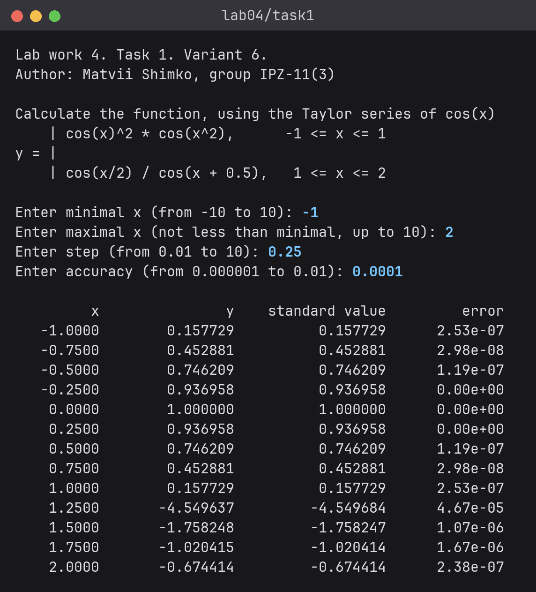

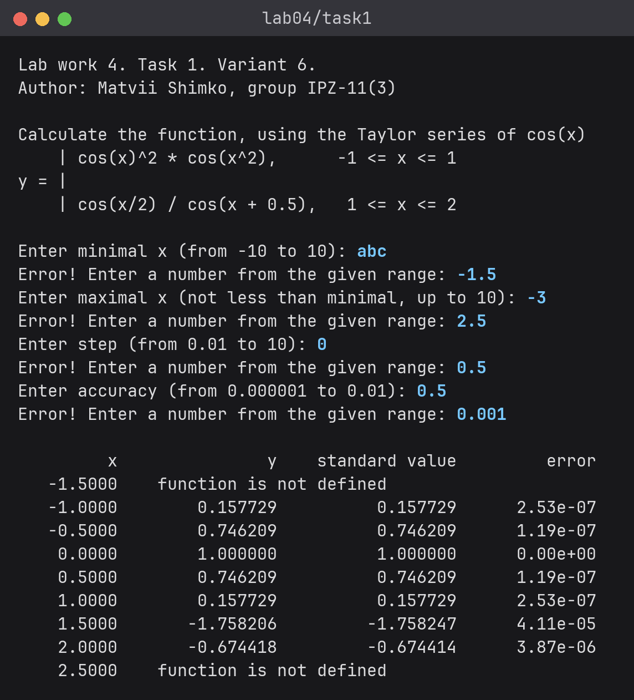

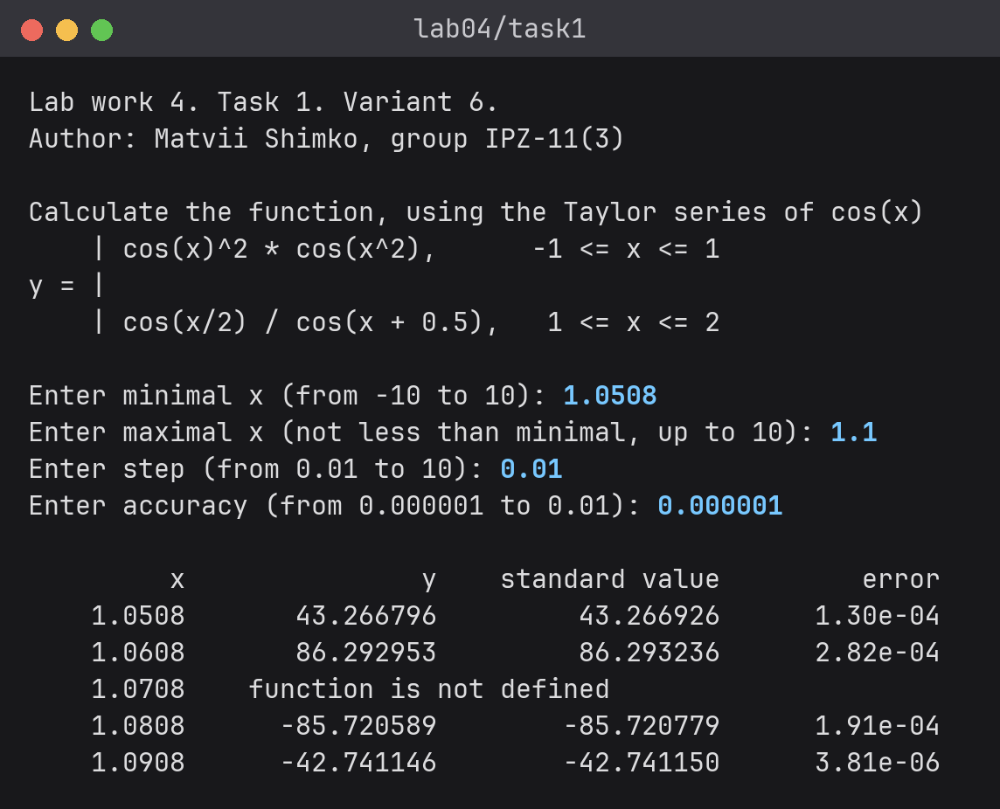

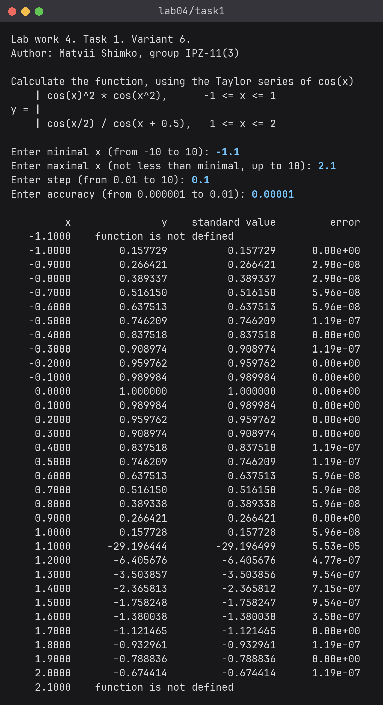
Третій сценарій показує зону поруч із нулем знаменника: при x = 1.0708 модуль знаменника менший за 0.0001, тому функція вважається невизначеною, а для сусідніх x значення сягають 86 за модулем. Похибка там найбільша: 2.8 · 10-4 при точності ряду 10-6.
Завдання 2 - варіант 6

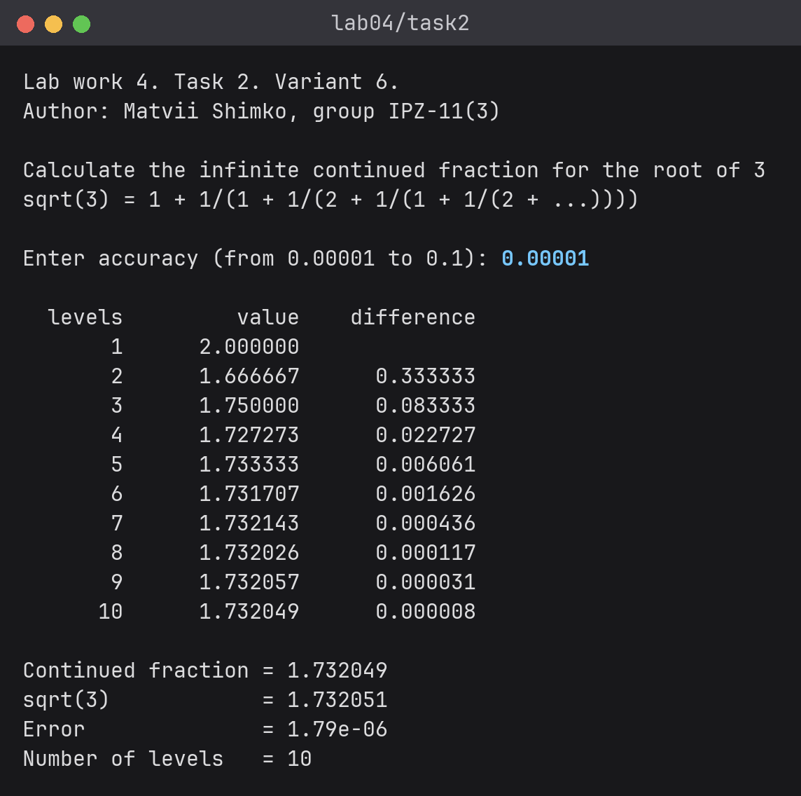

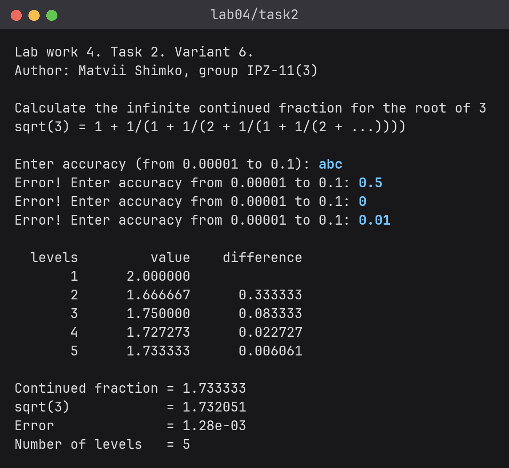
Лабораторна робота №4 / 07 з 08
7. Аналіз достовірності результатів
Завдання 1 - перевірка в Excel
Результати перевірено в Excel (файл check.xlsx, аркуш "Завдання 1"). Перевірка складається з двох частин.
Спочатку окремо перевірено ряд. Його члени обчислено напряму через POWER і
FACT, з тим самим правилом зупинки, для аргументів 0.5, 0.25, 0.75 і 2 при
ε = 0.0001. Із цих сум отримано y при x = 0.5 і x = 1.5. Різниця з програмою
1.5 · 10-7 і 3.2 · 10-7, її дає округлення під час виведення.
Потім для всіх 60 рядків чотирьох сценаріїв значення обчислено за умовою через вбудовану функцію
COS, у порядку сценаріїв із розділу результатів:

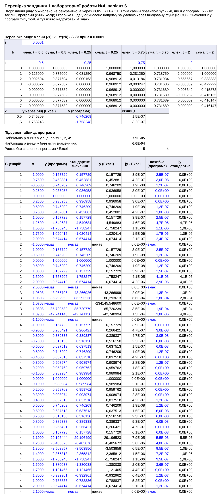
- у сценаріях 1, 2 і 4 найбільша різниця між y програми й Excel 7.9 · 10-5, вона при x = 1.1, де знаменник малий. Для більшості рядків різниця не перевищує 10-6;
- біля нуля знаменника найбільша різниця 6.6 · 10-4 при y ≈ 86. Значення тут дуже чутливе до x, а x в аркуші взято з 4 надрукованими знаками;
- рядків без значення в програмі 5, а в Excel 4. Зайвий рядок при x = 1.0708: Excel ділить на дуже мале число і дає близько -234146, а програма вважає такий знаменник нулем. Решта рядків "function is not defined" збігаються;
- колонка похибки програми збігається з різницею колонок y і стандартного значення з точністю до округлення.
Завдання 1 - ручна перевірка
Перші члени ряду для t = 0.5, ε = 0.0001, an = -an-1 · 0.25 / ((2n - 1) · 2n):
Таблиця 3 - Члени ряду для cos(0.5)
| n | Рекурентна формула | Пряма формула | Сума |
|---|---|---|---|
| 0 | 1 | 1 | 1 |
| 1 | -1 · 0.25 / (1 · 2) = -0.125 | -0.25 / 2! = -0.125 | 0.875 |
| 2 | 0.125 · 0.25 / (3 · 4) = 0.002604 | 0.0625 / 4! = 0.002604 | 0.877604 |
| 3 | -0.002604 · 0.25 / (5 · 6) = -0.000022 | -0.015625 / 6! = -0.000022 | 0.877582 |
Модуль члена з n = 3 менший за ε, тому сума зупиняється на 0.877582. Так само cos(0.25) ≈ 0.968912. Тоді y(0.5) = 0.8775822 · 0.968912 ≈ 0.746209, програма вивела 0.746209. Для другої формули y(2) = cos(1) / cos(2.5) = 0.540302 / (-0.801144) ≈ -0.674414, програма вивела -0.674414.
Межі теж перевірено. При x = 1 у сценаріях 1, 2 і 4 надруковано значення першої формули (0.1577), при x = -1.1, -1.5, 2.1 і 2.5 надруковано "function is not defined", при кроці 0.1 таблиця закінчується останнім значенням 2.1. Некоректні значення abc, -3 (менше за xmin), 0 і 0.5 відхилено.
Завдання 2 - перевірка в Excel
На аркуші "Завдання 2" того самого файла дріб обчислено іншим способом. Програма рахує знизу
вгору, а в Excel значення знаходиться зверху вниз через чисельники й знаменники pn =
anpn-1 + pn-2, qn = anqn-1 +
qn-2. Значення √3 у комірці обчислено функцією SQRT.

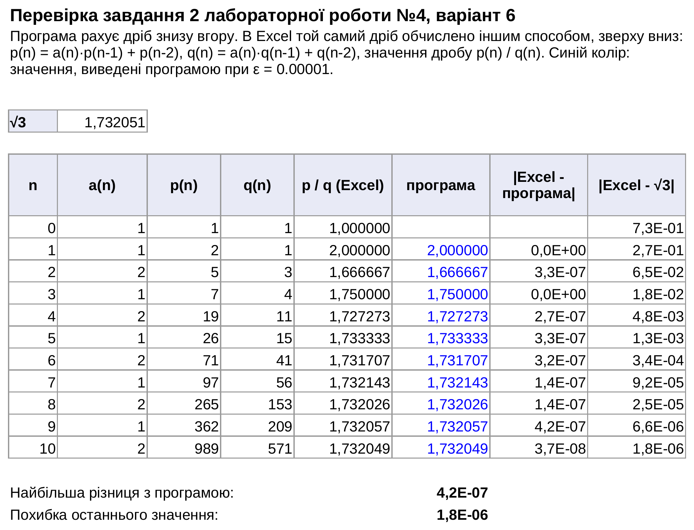
- усі значення збігаються, найбільша різниця 4.2 · 10-7, її дає округлення при виведенні;
- значення по черзі більші й менші за √3, як описано в аналізі;
- при ε = 0.00001 програма зупинилась на 10 рівнях, останнє значення 989/571 ≈ 1.732049, похибка 1.8 · 10-6 менша за задану точність. Програма вивела таку саму похибку 1.79e-06.
Завдання 2 - ручна перевірка
Таблиця 4 - Значення дробу для малих рівнів
| Рівні | Обчислення вручну | Результат | Програма |
|---|---|---|---|
| 1 | 1 + 1/1 | 2 | 2.000000 |
| 2 | 1 + 1/(1 + 1/2) = 1 + 2/3 | 5/3 ≈ 1.666667 | 1.666667 |
| 3 | 1 + 1/(1 + 1/(2 + 1)) = 1 + 3/4 | 7/4 = 1.75 | 1.750000 |
| 4 | 1 + 1/(1 + 1/(2 + 2/3)) = 1 + 8/11 | 19/11 ≈ 1.727273 | 1.727273 |
Лабораторна робота №4 / 08 з 08
8. Висновки
Розроблено дві програми. Перша обчислює кусково задану функцію, а косинус рахує власною функцією через ряд Тейлора, без факторіала і степеня. У таблиці поруч із y стоять стандартне значення і похибка, найбільша похибка вийшла біля нуля знаменника. Друга програма рахує ланцюговий дріб для √3 і додає рівні, поки не досягне заданої точності: при ε = 0.00001 вистачило 10 рівнів. Результати обох програм збіглися з Excel і ручними розрахунками, відрізняється лише рядок x = 1.0708, де Excel дає число, а програма вважає функцію невизначеною.